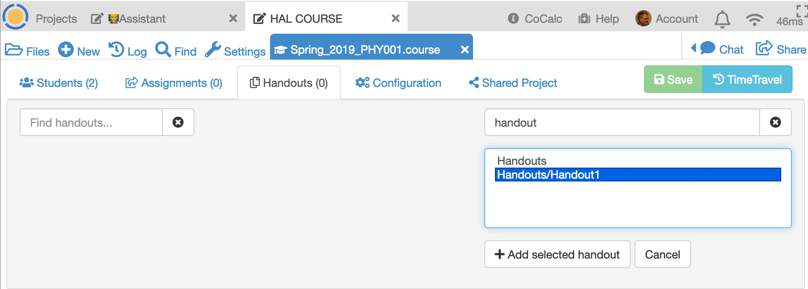
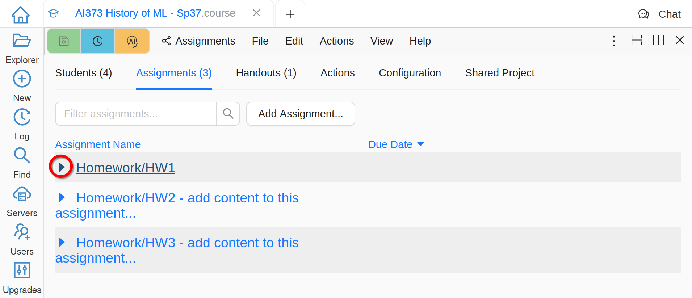
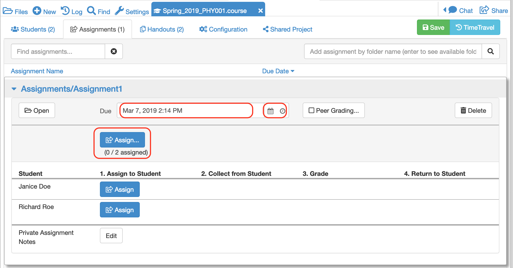
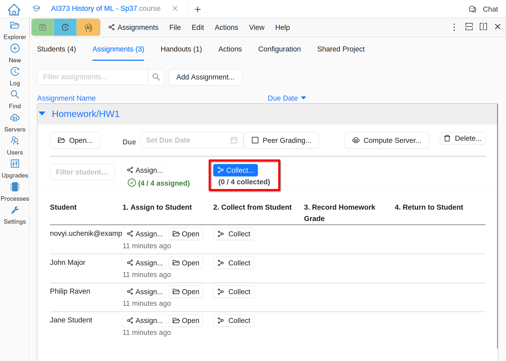
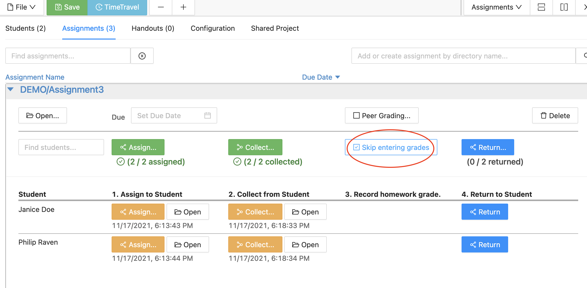
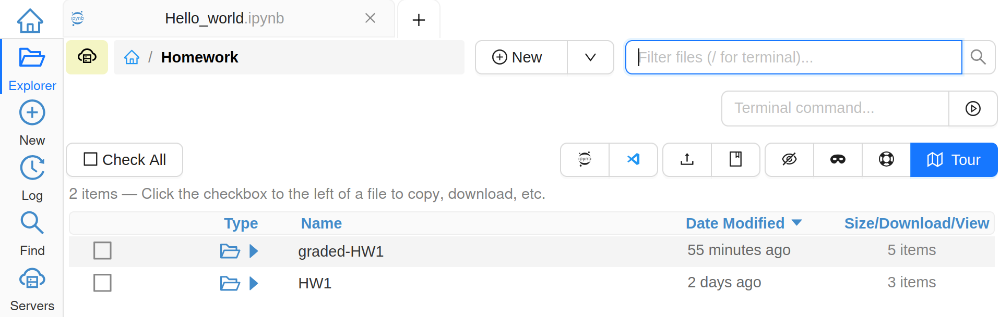

Course Management
No matter what you’ve added in the instructor’s view of the course, the students will not see any files until you explicitly assign them.
Create a new Handout
A handout consists of a folder that contains one or more files to be distributed to your students.
Create a folder called Handouts in the root directory of your course project. Within this folder create a subfolder called, say, Handout1 and populate it with one or more files for the handout. These files can be anything - text, Markdown, code, pdf, and may contain subfolders.
Open the .course file and click on the Handouts tab

Type handout in the search box on the right hand of the screen and press enter. Note that search is case-insensitive.
The system will look for any folders with Handout1 in their path name and return a set of options. Highlight the one you want and click on Add selected handout.
The new handout will be added to the list of handouts available for the course.
Create a new assignment
An assignment is a folder that contains one or more files that can be distributed to your students and collected at some future time for grading.
Create a folder called Assignments in the root directory of your course project. Within this folder create a subfolder called, say, Assignment1 and populate it with files that contains questions or problems for your students to answer. For example, an assignment can contain a Jupyter notebook and data files, with instructions for a programming exercise.
Open the .course file and click on the Assignments tab. Enter assignment1 in the search box on the right hand of the screen and press enter.
The system will return a list of folders with assignment1 in their path name. Highlight the one you want and click on Add assignment.

The new assignment will be added to the list of assignments available for this course.
Distributing an assignment to students
Click on the assignment in the assignment list. When the assignment opens, set the Due date. You can do this in the text area, or using the calendar and clock widgets to the right. Click on the Assign button to distribute to all students in the course.
Alternatively, you can distribute just to individual students.
When an assignment is distributed to a student, a copy of the assignment folder will appear in the student project.
Advise the students that all work on the assignment should take place in this folder. Any work performed outside of this folder will not be collected.
Peer Grading
A very useful function for formative assessment is peer grading. Use peer grading to randomly (and anonymously) redistribute collected homework to your students, so that they can grade it for you.
Within the assignment, click on the Peer Grading icon and follow the instructions to activate this feature.

Collecting assignments from students
After an assignment has been made, a Collect icon appears next to each student. Clicking on one of these will make a copy of the student’s assignment folder to your account. The entire folder will be copied including any extra files the student may have created.
Alternatively, click on the Collect icon in the top row to collect from all students simultaneously.
You should make sure that your project has enough disk space to accommodate this. It may be necessary to purchase an upgrade if you need more than the free allowance (currently 3GB per project).
Once the assignment has been collected, anything the student subsequently does in their copy will not be reflected in your copy.
If you click on the Files icon and go to the root directory of the course project, you’ll see that a new folder will have been created with the name [your_course_name]-collect

Navigating within this folder, you’ll find that it has a similar file structure to the original assignment. For example, for this demonstration we had the structure /assignments/Assignment1 which appears in the collected folder as [your_course_name]-collect/assignments/Assignment1. Entering this folder will give a view of all students’ versions of this assignment

The folder corresponding to each collected assignment will have been given a unique random name. Navigating inside this folder, you will see all collected files along with a text file whose filename identifies the student.

At this point, you can open and mark the student’s returned assignment.
An easier interface for opening a student’s collected assignment is via the .course file. Simply click on the Open icon corresponding to the student you are interested in and you’ll be taken to the folder described above.

Returning Assignments Without Grading
You can provide comments to students by editing student files that you have collected, or by adding files to the “-course-collect” folder for the assignment and student in question.
If you click the “Skip entering grades” button before returning assignments, your notes and any added files will be sent to the student projects, but the GRADE.md file will contain a statement that either the assignment is ungraded, or a grade is assigned outside of CoCalc.
Manual Grading
You may annotate the student’s assignment by modifying the collected file(s) in any way you like. The student will get a copy of everything you do after you return it.
When working with Jupyter notebooks, it can be useful to make annotations in markdown cells and set the color of the annotations to stand out.
You can change the font color in a markdown cell in Text edit mode using the font options toolbar, as explained in the section on Font options.
Or you can edit the cell in Markdown edit mode and enter the HTML tags for desired color explicitly:
<span style='color:red'>Great work!</span>

Once you’ve finished marking and commenting on the student’s notebook, you can enter a grade via the .course file. Click on the Enter Grade button to open up the grade entry text box and enter the grade. This can be a number or any other string that makes sense for your course.

Automatic Grading
For automatic grading, see Teaching with nbgrader.
Exporting grades
It is possible to export grades for all assignments as either a .csv file or as executable Python code. The Export grades function is available in the Configuration tab of the .course file.

The .csv file format looks like this:
# Course 'Autumn_2016_PHY001'
# exported 2016-06-13T13:24:40.141Z
Name,Email,"assignments/Assignment1","Notes"
"Mike Croucher","some.email@sheffield.ac.uk","80",""
"Mike_test ","some_other_email@sheffield.ac.uk","100",""
"bar@sheffield.ac.uk","bar@sheffield.ac.uk","90",""
"foo@sheffield.ac.uk","foo@sheffield.ac.uk","70",""
The corresponding Python code looks like this:
course = 'Autumn_2016_PHY001'
exported = '2016-06-13T13:26:19.407Z'
assignments = ['assignments/Assignment1','Notes']
students = [
{'name':'Mike Croucher', 'email':'some.email@sheffield.ac.uk', 'grades':['80','']},
{'name':'Mike_test ', 'email':'some_other_email@sheffield.ac.uk', 'grades':['100','']},
{'name':'bar@sheffield.ac.uk', 'email':'bar@sheffield.ac.uk', 'grades':['90','']},
{'name':'foo@sheffield.ac.uk', 'email':'foo@sheffield.ac.uk', 'grades':['70','']},
]
Returning an assignment to students
Once an assignment has been graded, the Return to student button appears.

Clicking on this sends a copy of the graded assignment back to the student. It appears in their assignments folder like this:
Note that the student now has both their original assignment and a copy of the returned, graded assignment.

{kind=link}
{kind=link}
{kind=link}
{kind=link}
{kind=link}
{kind=link}